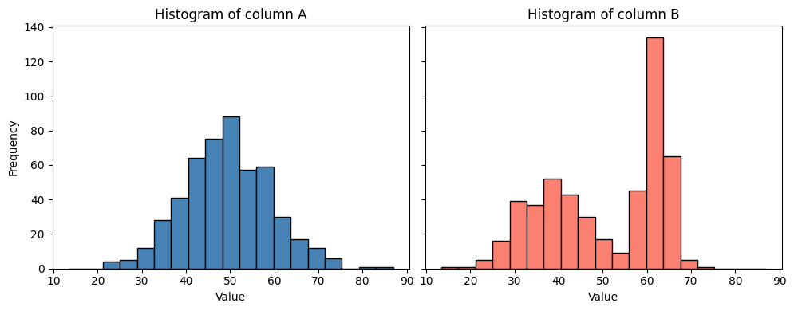

Statistical testing#
In this notebook we will use bia_bob to apply a statistical test to some example data. The data is tricky (for a reason).
First we initialize the AI-assistant to make use of the Helmholtz blablador infrastructure.
from bia_bob import config_blablador, bob
config_blablador()
The over-simplified approach#
In the first attempt, we ask to determine if columns A and B are significantly different without any further instructions.
%%bob load data/data.csv and
determine if the columns A and B
are significantly different.
I will load data/data.csv with pandas, extract columns A and B, and perform an independent two‑sample t‑test (Welch’s test) to check whether their means differ significantly. The test statistic and p‑value will be printed, together with a simple interpretation.
import pandas as pd
from scipy import stats
# 1. Load the CSV file
csv_path = os.path.join("data", "data.csv")
df = pd.read_csv(csv_path)
# 2. Extract columns A and B, removing NaNs
a = df["A"].dropna()
b = df["B"].dropna()
# 3. Perform Welch's t‑test (independent samples, unequal variances)
t_stat, p_val = stats.ttest_ind(a, b, equal_var=False)
# 4. Output the results
print(f"T‑statistic: {t_stat:.4f}")
print(f"P‑value: {p_val:.4e}")
if p_val < 0.05:
print("Result: Columns A and B are significantly different (p < 0.05).")
else:
print("Result: No significant difference between columns A and B (p ≥ 0.05).")
T‑statistic: -1.3287
P‑value: 1.8428e-01
Result: No significant difference between columns A and B (p ≥ 0.05).
This result might be misleading, simply because we didn’t study the data yet. Let’s plot the data.
%%bob
Plot histograms for A and B
I will create side‑by‑side histograms for the values in columns A and B that were already loaded into the variables a and b. The histograms will be displayed with Matplotlib, sharing the same binning for easy visual comparison.
import matplotlib.pyplot as plt
import numpy as np
# 1. Determine common bin edges for both datasets
combined = np.concatenate([a.values, b.values])
bin_edges = np.histogram_bin_edges(combined, bins='auto') # automatic binning
# 2. Plot histograms side by side
fig, axs = plt.subplots(1, 2, figsize=(10, 4), sharey=True)
axs[0].hist(a, bins=bin_edges, color='steelblue', edgecolor='black')
axs[0].set_title('Histogram of column A')
axs[0].set_xlabel('Value')
axs[0].set_ylabel('Frequency')
axs[1].hist(b, bins=bin_edges, color='salmon', edgecolor='black')
axs[1].set_title('Histogram of column B')
axs[1].set_xlabel('Value')
plt.tight_layout()
plt.show()

From this visualization we can guess that the data in B is not normal distributed; a pre-condition for the T-test used above.
Professional statistical testing#
An improved prompt contains an additional task: Checking preconditions. Hence, the resulting code will be longer and more detailed.
%%bob
Please test again if columns A and B are significantly different.
Before applying a statistical test, ensure that the necessary
pre-conditions are met.
I will first check the required assumptions for a parametric test on columns A and B:
Normality – Shapiro‑Wilk test for each column.
Equality of variances – Levene’s test.
Based on the outcomes:
If both columns are normal and variances are equal → classic independent‑samples t‑test.
If both are normal but variances differ → Welch’s t‑test.
If normality is violated for either column → Mann‑Whitney U test (non‑parametric).
The code prints the assumption test results, selects the appropriate statistical test, runs it, and reports the test statistic and p‑value with a brief interpretation.
# Assumption tests and appropriate statistical test
# (All required modules are already imported: stats from scipy, numpy as np, pandas as pd, matplotlib.pyplot as plt, os)
# 1. Normality (Shapiro‑Wilk)
shapiro_a_stat, shapiro_a_p = stats.shapiro(a)
shapiro_b_stat, shapiro_b_p = stats.shapiro(b)
normal_a = shapiro_a_p > 0.05 # fail to reject H0 → data are normal
normal_b = shapiro_b_p > 0.05
# 2. Equality of variances (Levene)
levene_stat, levene_p = stats.levene(a, b)
equal_variance = levene_p > 0.05 # fail to reject H0 → variances equal
print("=== Assumption tests ===")
print(f"Shapiro‑Wilk A: p = {shapiro_a_p:.4e} → {'normal' if normal_a else 'non‑normal'}")
print(f"Shapiro‑Wilk B: p = {shapiro_b_p:.4e} → {'normal' if normal_b else 'non‑normal'}")
print(f"Levene variance: p = {levene_p:.4e} → {'equal variance' if equal_variance else 'unequal variance'}")
print()
# 3. Choose and run the appropriate statistical test
if normal_a and normal_b:
if equal_variance:
test_name = "Student's t‑test (equal variances)"
test_statistic, pvalue = stats.ttest_ind(a, b, equal_var=True)
else:
test_name = "Welch's t‑test (unequal variances)"
test_statistic, pvalue = stats.ttest_ind(a, b, equal_var=False)
else:
test_name = "Mann‑Whitney U test (non‑parametric)"
test_statistic, pvalue = stats.mannwhitneyu(a, b, alternative='two-sided')
# 4. Report the result
print(f"=== Selected test: {test_name} ===")
print(f"Statistic = {test_statistic:.4f}")
print(f"P‑value = {pvalue:.4e}")
alpha = 0.05
if pvalue < alpha:
print(f"Conclusion: Significant difference (p < {alpha}).")
else:
print(f"Conclusion: No significant difference (p ≥ {alpha}).")
=== Assumption tests ===
Shapiro‑Wilk A: p = 5.6236e-01 → normal
Shapiro‑Wilk B: p = 4.0635e-18 → non‑normal
Levene variance: p = 1.3016e-18 → unequal variance
=== Selected test: Mann‑Whitney U test (non‑parametric) ===
Statistic = 113657.0000
P‑value = 1.3000e-02
Conclusion: Significant difference (p < 0.05).
The result is now different: This test sees the differences between the datasets.
Exercise#
Start a new notebook and prompt bia-bob in a way that it immediately answers with correct code for analysing data/data.csv.